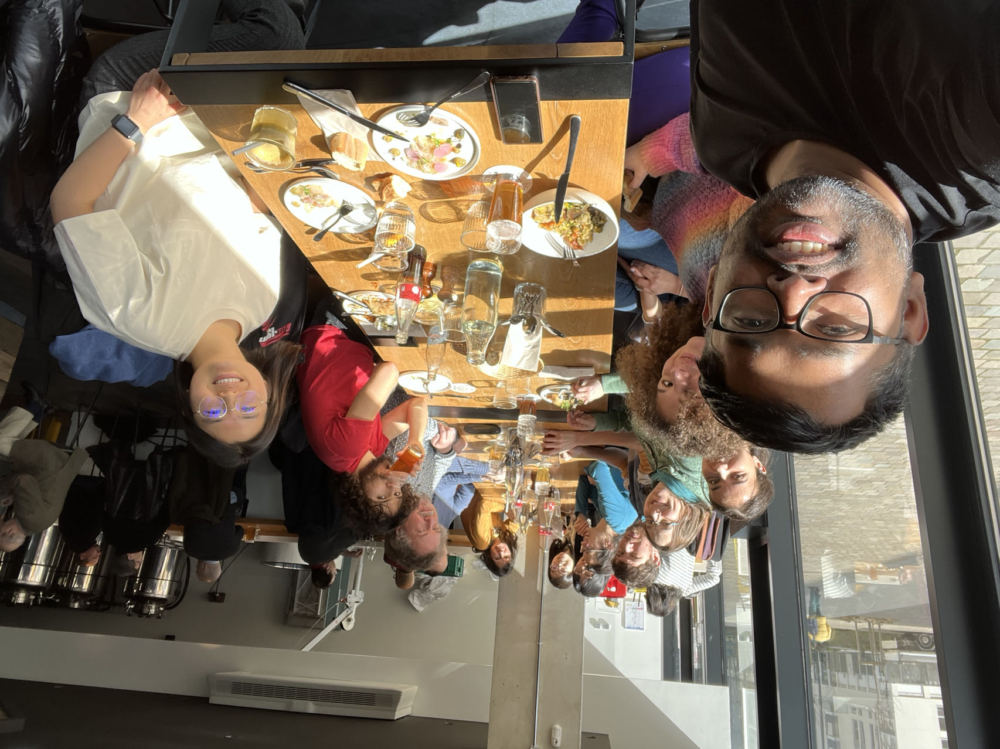
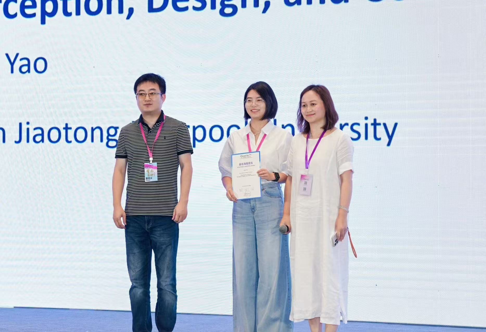
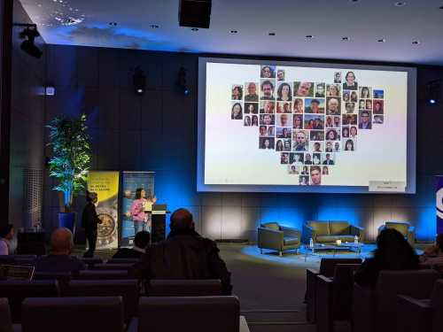
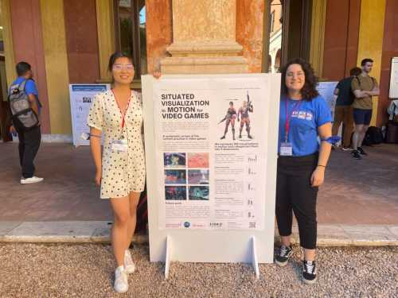

Research Activities




Grants
- Open Project Program of the State Key Laboratory of CAD&CG, Zhejiang University (PI, № A2514), 01/01/2025-31/12/2026
- XJTLU RDF (PI, № RDF-24-01-062), 01/01/2025-31/12/2027
- XJTLU PGRS (PI, № FOSA2506030), 16/07/2025-now
Awards
Organization
- 2026: Organizing Committee (Community/Meetups/Elections chair) & Program Committee (Full papers & Posters), IEEE Visualization & Visual Analytics (IEEE VIS), Nov. 9-13, Boston, U.S. Program Committee (Full papers), ChinaVis, July. 19-22, Guiyang, China.
- 2025: Program Committee (Technical papers), International Symposium on Visual Information Communication and Interaction (VINCI), Dec. 1-3, Linz, Austria. Program Committee (Full papers & Posters), IEEE Visualization & Visual Analytics (IEEE VIS), Nov. 2-7, Vienna, Austria. Program Committee (Short papers), ACM Symposium on Eye Tracking Research & Applications (ETRA), May 26-29, Tokyo, Japan.
- 2024: Co-organiser for the workshop on First-Person Visualizations for Outdoor Physical Activities, held as a part of IEEE VIS 2024, Oct. 13, Florida, U.S.
Review
- 2026: CHI Special Recognitions for Outstanding Reviews, VIS, EuroVis, PacificVis (TVCG journal track), ISMAR, ETRA, HRI, JOV, ChinaVis
- 2025: CHI Special Recognitions for Outstanding Reviews, VIS, EuroVis, TVCG, ISMAR, UIST, ETRA, HRI, NSERC, ChinaVis, IWC, VINCI
- 2024: CHI, VIS, EuroVis, TVCG, ETRA, alt.chi, IMX, HRI, TSMC, SAIS, ISS, MobileHCI, ETVIS, CHI LBW
- 2023: CHI, VIS, EuroVis
- 2022: VIS, SIGGRAPH Asia